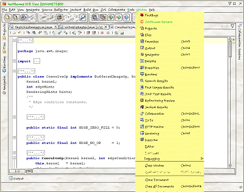
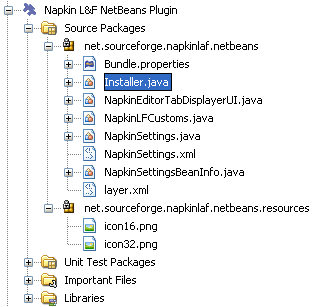
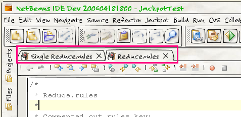

Alex Lam
Alex's hot links:
|
Alex Lam |
|
Alex's hot links: |
NetBeans Staff met with Alex Lam, to grill him about a great new module he's working on: integrating the Napkin Look & Feel (L&F) with NetBeans IDE (and any other application built on the NetBeans Platform).
I am from Hong Kong, currently studying Physics as a 3rd year undergraduate in Cambridge, UK.
Unfortunately not—I have yet to discover whether they have a Java community here in Cambridge!
Napkin, as its name implies, is a L&F which gives users the impression that an application's user interface is scribbled on a crumpled piece of napkin. The primary aim is to "give provisional work a provisional look", i.e., to present unfinished work in a user interface which appears yet to be finalised.
I spotted Napkin while looking through the results of the NetBeans L&F competition, and I have to say I'm really impressed about how it looks. I can see myself moving the ideas I scribbled during lunch time directly onto the screen—after all, an IDE is where we programmers cook up ideas and implementations, right?
Although Napkin had quite a few visual bugs and other issues back then, most of them were fixed when 1.0 was released; however, NetBeans resisted all general attempts to look "native" with the Napkin L&F. I didn't think too much about writing a module back then because I thought a L&F should be general to all applications without specific details, i.e., the code should serve a wider community. Then I thought of the NetBeans Platform—even if the IDE community is not wide enough, implementing a NetBeans module would actually benefit all applications built on top of the platform! So I made up my mind and started working on this, which is what you can now download and use from Napkin's Update Center.
When you present your first user interface draft to your manager in a meeting, it is inevitable that your manager could get the wrong impression about the progress of your project—after all, the user interface, which is what the manager can see, is completed and looks perfect, even though all the core underlying logic that really contributes to the application is still missing. The mismatch between reality and this impression is hard to tackle, and is where Napkin comes into play—it gives the user interface an unfinished, provisional look to match what it really is, an unfinished project application. For example, this is what NetBeans IDE looks like with this look and feel:

Further examples can be found here on the Napkin website
Sure. I started off wrapping the original Napkin library using the IDE's Library Wrapper Module project template, which you can do with only a few clicks.
Then I created a module suite, which contains the wrapper module and a new module project which I use to put the real code in. The module project looks like this in the Projects window:

So, in the module project, I've put an Installer which initialises Napkin during IDE startup with this code:
UIManager.setLookAndFeel(new NapkinLookAndFeel());
JFrame.setDefaultLookAndFeelDecorated(true);
JDialog.setDefaultLookAndFeelDecorated(true);
// set main IDE window to be decorated, too
JFrame frame = (JFrame) WindowManager.getDefault().getMainWindow();
// work out the state of the window so as to restore it later on
boolean needToDispose = frame.isDisplayable();
boolean isVisible = frame.isVisible();
// detach from display device if necessary
if (needToDispose) {
frame.dispose();
}
// set to use Napkin's decoration
frame.setUndecorated(true);
frame.getRootPane().setWindowDecorationStyle(JRootPane.FRAME);
frame.getRootPane().updateUI();
// restore the window back to its previous state
if (needToDispose) {
frame.pack();
frame.setVisible(isVisible);
}
In NapkinLFCustoms.java, which extends the NetBeans API LFCustoms class, I have overriden createApplicationSpecificKeysAndValues() to return a list of UIDefaults entries that are Napkin-specific. NapkinEditorTabDisplayerUI.java implements the visuals of the tabs above the editor window, as shown below:

And that's my first working NetBeans module for Napkin! After that, people suggested that I should put in an option to toggle Napkin on/off in the IDE, so I put in a new System Option class, and registered it in the layer.xml, to have it persist and load into the system before my module starts. However, I've been told that the System Option class will be replaced in NetBeans 6.0, so I won't go into any detail about how I implemented it here.
You can get it from Napkin's Update Center:
http://napkinlaf.sourceforge.net/netbeans/updates.xml
You can also get it from nbextras.org:
http://www.nbextras.org/2006/04/25/1146000991633.html
Not yet—I am considering working on a generalised Look & Feel switcher in the near future, though.
To be honest, the L&F customisation parts of the NetBeans Platform is rather unintuitive and severely under-documented, in my opinion. In fact, the functionalities aren't complete as well—I have yet to wait for some enhancements to HTMLRenderer in order to be able to customise it.
Other than that, I have slight issues with building the modules and the update script, but I'd blame myself for mixing NB6 daily builds and NB5 platform. ;-)
By downloading and staring at the NetBeans sources and producing workarounds most of the time. I have to admit that googling and tutorials couldn't provide much help here.
Regardless of the issues above, I'd say I like the experience since the majority of other things work seamlessly without much tedious typing, etc.
I do have an idea of creating an application in which we can share computing resources and code snippets, initially restricted to mathematical problem solving. The NetBeans Platform seems to provide a good infrastructure for the idea to build upon. :-)
I'd say I like it in general because it works out of the box. I mean, you get things working without having to think about "download A, install B, go to C, and move around D, then type E... then press Z". OK, as a programmer we should be able to follow more complex procedures, but I can't see why I should be doing these tedious tasks if a better alternative exists—and NetBeans IDE is the alternative.
And when you bump into a problem, people on the mailing lists and the issue tracker are usually very responsive and helpful.
I have yet to explore NetBeans Platform in general, since I have yet to build an application on top of it.
Can't think of one off the top of my head, since most parts with general module development are quite painless, at least when compared to getting the L&F customisation to work.
I'd like to thank the NetBeans team for developing such a nice product—the fact that it contains so many features and yet is simple to utilise, and also the fact that it is still evolving rapidly!
For information about creating and developing plug-in modules and rich-client applications, see the following resources: